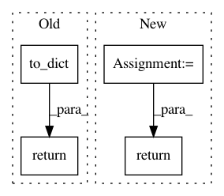

f3b18e9b3f7470dcfd47baa5a5aad302b0fd5e1f,polyaxon/scheduler/spawners/dockerizer_spawner.py,DockerizerSpawner,start_dockerizer,#DockerizerSpawner#Any#Any#Any#,26
Before Change
pod_name = constants.DEPLOYMENT_NAME.format(
job_uuid=self.job_uuid, name=self.DOCKERIZER_JOB_NAME)
return self.create_or_update_pod(name=pod_name, data=deployment).to_dict()
def stop_dockerizer(self):
pod_name = constants.DEPLOYMENT_NAME.format(job_uuid=self.job_uuid,
name=self.DOCKERIZER_JOB_NAME)
After Change
job_uuid=self.job_uuid, name=self.DOCKERIZER_JOB_NAME)
pod_resp, _ = self.create_or_update_pod(name=pod_name, data=deployment)
return pod_resp.to_dict()
def stop_dockerizer(self):
pod_name = constants.DEPLOYMENT_NAME.format(job_uuid=self.job_uuid,
name=self.DOCKERIZER_JOB_NAME)
In pattern: SUPERPATTERN
Frequency: 4
Non-data size: 4
Instances
Project Name: polyaxon/polyaxon
Commit Name: f3b18e9b3f7470dcfd47baa5a5aad302b0fd5e1f
Time: 2018-06-03
Author: mouradmourafiq@gmail.com
File Name: polyaxon/scheduler/spawners/dockerizer_spawner.py
Class Name: DockerizerSpawner
Method Name: start_dockerizer
Project Name: cesium-ml/cesium
Commit Name: 390258fe22f39a2ae916cb95a06387dfa03f47ed
Time: 2016-02-24
Author: brettnaul@gmail.com
File Name: mltsp/celery_tasks.py
Class Name:
Method Name: featurize_ts_file
Project Name: polyaxon/polyaxon
Commit Name: 2ff60edb6ff4f127259380f4fdfd703c9330a682
Time: 2018-06-26
Author: zhecongguo@linkdoc.com
File Name: polyaxon/api/experiments/serializers.py
Class Name: ExperimentDetailSerializer
Method Name: get_resources
Project Name: mlflow/mlflow
Commit Name: b7222818e9dd4d33ee933388e73a11ad8d0bf89b
Time: 2018-09-06
Author: 33237569+tomasatdatabricks@users.noreply.github.com
File Name: tests/helper_functions.py
Class Name:
Method Name: score_model_in_sagemaker_docker_container